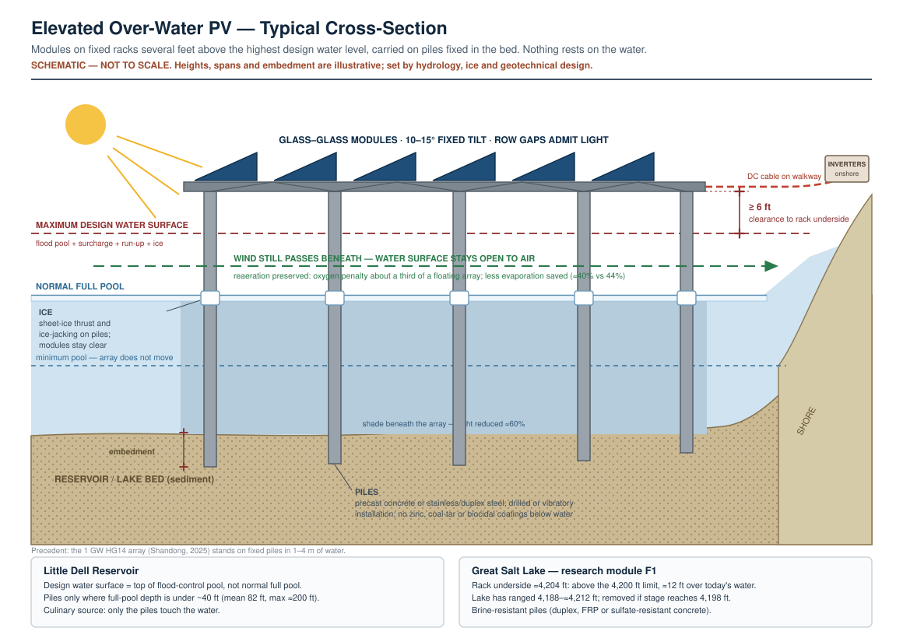

Great Salt Lake — Multifunction Solar Pre-Feasibility Site Plan
Design basis for any over-water element: modules on racks several feet above the water, carried on piles fixed in the lakebed. Nothing rests on the water surface. This replaces the floating basis used in earlier drafts. The playa arrays are conventional ground-mount on land and are unaffected.
Site: South-shore Gilbert Bay corridor, Great Salt Lake, Utah Jurisdiction: Sovereign lands below the meander line — Utah Division of Forestry, Fire & State Lands (FFSL), under the Public Trust Doctrine Date: 17 August 2026 Companion drawing: assets/great-salt-lake-solar-site-plan.svg

1. The Finding That Shapes This Entire Document
Large-scale over-water photovoltaics on the open water of Great Salt Lake is not a viable proposition, and this plan does not propose it.
Mounting the panels on piles above the water instead of floating them changes the engineering picture but not the conclusion. The lake's shallowness actually suits piles — the 1 GW HG14 array in Shandong stands on fixed piles in 1–4 m of water. Four constraints still defeat a large open-water array:
- Lake-level range. The lake has stood anywhere from 4,188 ft (2022) to about 4,212 ft (mid-1980s). Racks must clear the highest design stage with freeboard, so piles over today's shallows become tall structures, and every one of them sits in the Lake Recovery Reserve (§4).
- Materials. Corrosion of steel in this class of brine can exceed 0.6 mm/yr, and a pile array puts thousands of foundations permanently in it. There is no multi-year over-water PV operating record anywhere in comparable hypersaline service. Design life and O&M cost are therefore unknown, not merely uncertain.
- Ecology. Shading reduces photosynthetically active radiation reaching the phytoplankton and microbialite communities that support brine shrimp and brine flies — the food base for roughly 12 million birds annually. The magnitude of that effect at scale is unquantified.
- Public trust. FFSL holds these lands in trust, with navigation, commerce and fishing having primacy. Any lease is revocable to fulfil trust duties. A use with unquantified ecosystem risk is a poor candidate for a trustee's approval, and correctly so.
What this plan proposes instead is a two-part configuration that delivers substantially more energy than an open-water array would, carries far lower ecological risk, and generates the specific data any future over-water proposal would need:
- A playa ground-mount array above the 4,200 ft contour as the primary generation asset, sited so it never occupies surface the lake needs to reclaim.
- A small paired near-shore research module (F1), elevated on piles above the water, whose purpose is to answer brine-service and ecological questions, not to generate meaningful power.
Class 5 pre-feasibility (AACE International; expected accuracy −30% / +50%). Contours, shoreline, ownership and infrastructure on the drawing are schematic and must be replaced with LiDAR, cadastral and survey data.
2. Site Context
| Parameter | Value | Note |
|---|---|---|
| South-arm stage (2026) | ≈4,191.6 ft | Peaked ≈4,192.6 ft April 2026 |
| Record low | 4,188 ft (November 2022) | |
| Healthy-elevation target | 4,198 ft | Great Salt Lake Strategic Plan |
| Current deficit | ≈6.4 ft below target | |
| Managing agency | FFSL (sovereign lands below the meander line, plus Fremont Island) | |
| Governing plans | GSL Comprehensive Management Plan (2013) and Mineral Leasing Plan — both under active update | Comment window is the highest-leverage engagement available |
| Lake Commissioner | Hannah Freeze (appointed 22 July 2026, succeeding Brian Steed) | New in role — a genuine window to shape framing |
| Advisory bodies | GSL Advisory Council (HB 343, 2010); GSL Technical Team (Utah Code 65A-10-8(11)); GSL Salinity Advisory Committee | |
| Authorizing instruments | Special Use Lease (1–51 yr) or General Permit (1–30 yr) under Utah Admin. Code R652-70 | Subject to public trust; revocable |
| Ecological status | ~12 million birds, 300+ species annually; hemispheric shorebird significance; brine shrimp fishery on the order of $70M | |
| Salinity stress | Gunnison Bay (north arm) has reached ≈330 g/L, brine shrimp near-absent | Optimum ≈75–160 g/L |
3. Tiered Site-Class Assessment
| Class | Description | Technical | Ecological risk | Legal tractability | Energy value | Co-benefit | Verdict |
|---|---|---|---|---|---|---|---|
| SC-1 | Open-water Gilbert Bay over-water PV (elevated, pile-mounted), large array | Moderate (shallow suits piles; stage range and brine do not) | Very high | Very poor | High | Evaporation (marginal) | Reject — §1 |
| SC-2 | Near-shore elevated PV, small, disturbed south-shore corridor | Moderate | Moderate | Moderate | Negligible | Research value | Adopt at research scale only |
| SC-3 | Playa ground-mount above the 4,200 ft contour | Good | Moderate (avian) | Moderate | High | Dust suppression | Adopt as lead |
| SC-4 | Causeway, dike and berm corridors (UPRR, Antelope Island) | Moderate | Low–moderate | Poor (third-party control) | Low (linear) | Uses disturbed land | Defer — opportunistic add-on |
| SC-5 | Industrial solar-salt evaporation ponds | Good | Low | Poor | Moderate | Negative | Reject — suppressing evaporation destroys the lessee's process |
| SC-6 | Watershed freshwater impoundments (Farmington Bay WMA, Bear River MBR) | Good | Very high | Very poor | Moderate | Evaporation | Reject — highest-value bird habitat in the system |
Recommended lead: SC-3 (playa ground-mount) with a co-located SC-2 research module.
Why this configuration is the right answer
- Generates ~740,000 MWh/yr at full build-out — a material Operation Gigawatt contribution, roughly two orders of magnitude more than any defensible near-shore over-water footprint.
- Covers no water, so the shading objection that defeats SC-1 does not apply.
- Addresses the actual public-health problem at Great Salt Lake — windblown dust from exposed lakebed — rather than the problem people assume solar should address.
- The research module generates brine-service durability and ecological data that any future over-water proposal would require, at a scale where failure is informative rather than damaging.
4. The Governing Design Principle
No infrastructure sited at Great Salt Lake may create an economic interest opposed to raising the lake.
This is the most important sentence in this document.
A solar lessee holding a long-term interest in dry lakebed acquires a financial motive to oppose lake recovery. That is a catastrophic outcome — worse than building nothing — and it is a foreseeable consequence of careless siting. Any proposal that does not address it directly will be, and should be, rejected by the Lake Commissioner and the GSL science community.
Enforcement mechanisms, all of which must appear in the lease instrument:
- No structure below the 4,200 ft contour. That is the 4,198 ft target plus 2 ft of wave run-up and freeboard. The band between the current shoreline and 4,200 ft is a Lake Recovery Reserve with no development of any kind, including no surface works for cable routing.
- Explicit subordination to elevation management. Lake-elevation decisions by the State take precedence over the lessee's interest, without exception.
- Inundation waiver. The lessee waives all claims for compensation, damages, or takings arising from inundation, elevation management, or any water-policy decision.
- Removal on inundation at lessee cost, bonded in advance.
- Political-activity covenant. The lessee is barred from advocating, funding advocacy, or litigating against lake-elevation measures.
The uncomfortable corollary, stated plainly. The playa that most urgently needs dust suppression is the recently-exposed lakebed below 4,198 ft — precisely the surface this plan forbids developing. Dust benefit is therefore limited to the chronically-exposed band above 4,200 ft. That band still emits dust in most years, so the benefit is real, but smaller than an unconstrained playa-solar proposal would claim. This constraint costs the project real value and should be accepted anyway. Trading lake recovery for dust suppression is not a trade worth making.
5. Layout and Schedule of Areas
| Zone | Type | Phase | Area (ac) | Capacity (MW_dc) | Energy (MWh/yr) |
|---|---|---|---|---|---|
| P1 | Playa ground-mount | 1 | 400 | 100 | ≈185,000 |
| P2 | Playa ground-mount | 2 | 1,200 | 300 | ≈555,000 |
| F1 | Near-shore elevated PV research module (pile-mounted) | 1 (concurrent) | 5 | 2 | ≈3,300 |
| Total | 1,605 | 402 | ≈743,300 |
Full build-out is equivalent to the annual electricity consumption of roughly 82,600 Utah households.
5.1 Basis of the energy numbers
- Playa power density 0.25 MW_dc/acre — typical utility-scale fixed-tilt ground mount (≈4 acres/MW).
- Playa specific yield 1,850 MWh/MW_dc·yr — nets two large opposing site-specific effects:
- Upward: salt-crust playa has unusually high albedo (roughly 0.3–0.5 versus ~0.2 for desert soil), materially increasing bifacial rear-side gain. A genuine and under-appreciated advantage of the site.
- Downward: a saline, dusty playa produces high soiling losses, and washing with fresh water is both costly and counterproductive in a basin defined by water scarcity.
- Both must be measured at station M1 (§8), not assumed. The albedo measurement alone may be publishable.
- F1 specific yield 1,650 MWh/MW_dc·yr — consistent with the Little Dell basis (low tilt for wind loading, netted against module-cooling gain).
5.2 The water number — read this before using it
Zone F1 suppresses roughly 5.6 acre-feet per year (95% UI 2.5–9.7) of evaporation. An elevated canopy suppresses less than a floating cover because wind still passes beneath it (see 05-quantitative-ecological-projections). Great Salt Lake evaporation is of order 10⁶ acre-feet per year. F1 therefore addresses approximately 0.0002% of lake evaporation.
F1 is an experiment. It is not a water-conservation measure, and it must never be presented as one. Offsetting even 1 ft of lake decline per decade would take roughly 53,000 acres of over-water arrays — about 8.5% of the lake — which would trigger every objection in §1. This is the central honest limitation of solar over Great Salt Lake, and stating it first is what makes the rest of the proposal credible.
(Note: the frequently-cited ~3 million acre-feet/yr GSL evaporation figure traces to a developer's presentation to the Legislative Water Development Commission in January 2026 and has not been independently verified here. Confirm against USGS and Utah Division of Water Resources water-balance products before citing it in any submission.)
6. Siting Constraints Inventory
| # | Constraint | Basis | Effect on layout |
|---|---|---|---|
| G-1 | Lake Recovery Reserve (below 4,200 ft) | §4 governing principle | Absolute exclusion; cable crossings by directional bore only, no surface works |
| G-2 | Wetland and spring complexes | Shorebird foraging; groundwater-dependent ecosystems | Excluded plus 300 ft buffer |
| G-3 | Mineral extraction leases | Existing lessee rights (Compass Minerals, US Magnesium and others) | Excluded; verify current lease geometry with FFSL |
| G-4 | Antelope Island State Park viewshed | Scenic and recreational values; public trust | Height limits, non-reflective finishes, coverage geometry |
| G-5 | FAA glint and glare | Salt Lake City International ≈8 mi east | Formal glint/glare analysis and FAA Form 7460-1 filing required. A hard gate routinely missed in early solar siting near airports. |
| G-6 | Migratory bird high-use areas | Migratory Bird Treaty Act; hemispheric flyway significance | Avoid high-use corridors; see §7 |
| G-7 | Brine shrimp harvest areas | Commercial fishery under state management | Relevant to F1 siting; consult industry directly |
| G-8 | Cultural resources | Undocumented at this stage | Class I and Class III surveys required |
| G-9 | Saline soils | Geotechnical and corrosion | Drives foundation selection (§9) |
7. The Governing Ecological Question: Avian Risk
For an open-water array, the governing ecological question is shading. For playa ground-mount on the Great Salt Lake flyway, it is avian attraction and collision.
The mechanism. Photovoltaic arrays reflect horizontally polarized light in a manner that some birds — particularly waterbirds and aquatic insects — may perceive as a water surface. This is the "lake effect" hypothesis. In a landscape where roughly 12 million birds are actively searching for water, in a basin whose actual water is receding, siting a large polarized-reflective surface is a serious hypothesis to test, not a formality to check off.
The state of the evidence is genuinely mixed. Some studies report meaningful mortality at desert PV sites; others find low rates and attribute observations to sampling artefact. There is no consensus, and essentially no data from a site of this flyway significance.
How to handle it — the whole strategy in miniature:
- Name the risk yourself, first, before any reviewer raises it.
- Design Zone P1 explicitly as the study that resolves it, with a pre-registered protocol co-designed with Utah DWR, USFWS, and an academic ornithologist.
- Make Zone P2 formally contingent on the P1 result, with pre-specified thresholds written into the lease.
- Commit to publishing the outcome including a negative one.
An agency asked to approve a 400-acre experiment that answers a question it also wants answered is in a very different position from an agency asked to approve a 1,600-acre solar farm.
8. Monitoring and Instrumentation Plan
BACI design, minimum 12-month pre-construction baseline, pre-registered hypotheses and analysis plan.
| Parameter | Method | Stations |
|---|---|---|
| Avian abundance, behaviour, mortality | Vertical and horizontal radar; standardized carcass searches with searcher-efficiency and scavenger-removal trials; behavioural observation | A1 plus paired off-array control |
| Aquatic-insect polarotaxis | Trap arrays on and off the array | A1 |
| Dust (PM10, PM2.5) | Continuous monitors upwind and downwind on the prevailing SW→NE axis | D1, D2 |
| Dust chemistry | Periodic filter analysis — arsenic, selenium, lanthanides, other lakebed-derived constituents | D1, D2 |
| Surface albedo | Upward- and downward-facing pyranometers | M1 |
| Soiling loss | Paired soiled and clean reference cells | M1 |
| Meteorology | Wind speed/direction, RH, air/soil temperature, GHI/POA | M1 |
| Salt-crust integrity and surface roughness | Repeat photogrammetry and roughness transects | Array and control |
| Corrosion (F1) | Coupon racks at multiple immersion depths; periodic mass-loss and metallography | F1 |
| Brine chemistry and biology (F1) | PAR attenuation, temperature, salinity, chlorophyll-a, brine shrimp and brine fly density | F1 plus control |
| Structural (F1) | Strain gauges and corrosion monitoring on piles; scour survey; wave and stage gauge; ice observation | F1 |
Pre-registered primary hypotheses
- H1: Array presence does not increase avian mortality relative to the paired control, evaluated as an equivalence test against a pre-specified biologically meaningful threshold.
- H2: Downwind PM10 flux is reduced relative to the upwind reference by an amount attributable to array-induced surface roughness and physical cover.
- H3: Measured playa albedo and soiling losses fall within the ranges assumed in §5.1; if not, the energy model is revised and republished.
- H4 (F1): Corrosion rates of specified materials in GSL brine remain below the threshold required for a 25-year design life. Expect this to fail for at least some materials — that is the point of the experiment.
9. Engineering Notes
9.1 Playa foundations
Saline soils are aggressive toward conventional galvanized driven piles, and playa bearing capacity is likely poor and variable. Options, in order of preference pending geotechnical investigation:
- Ballasted (non-penetrating) foundations — no ground penetration, minimal salt-crust disturbance (which matters directly for dust), fully removable. Highest wind-load demand.
- Composite or heavily-coated driven piles with a documented corrosion allowance and cathodic protection where appropriate.
- Helical piles if bearing permits.
Avoid concrete pier foundations: curing water demand and permanence both conflict with the project's own premises.
Salt-crust disturbance is a first-order design driver, not a construction detail. Breaking the crust during construction creates exactly the dust the project claims to reduce. Specify construction-phase dust control at least as rigorously as operations.
9.2 F1 near-shore module

- Elevated on piles in very shallow water. Rack underside at or above ≈4,204 ft — at least 4 ft above the 4,200 ft development limit, and about 12 ft above today's water — so the module never obstructs a recovering lake. The racks stand over dry lakebed when the lake is low; that is a normal operating state, not a failure.
- Piles: ≈124 [43, 260] (95% uncertainty interval, span-dependent), in duplex stainless steel, fibre-reinforced composite or sulfate-resistant precast concrete. Pile corrosion and scour are measured alongside the coupon programme.
- Removal trigger: sustained stage ≥ 4,198 ft, or the end of the 5-year term, whichever comes first. F1 is the one structure permitted inside the Lake Recovery Reserve, and only as a time-limited, bonded research exception.
- The material coupon program is the primary deliverable; the array itself is instrumentation.
- Fully removable, bonded, 5-year initial term.
- Sited in an already-disturbed corridor, away from brine shrimp harvest areas and known bird concentrations.
9.3 Interconnection
The existing transmission corridor along the I-80 alignment is the obvious interconnection path, and proximity to it is a principal reason for choosing this corridor over more remote shoreline. Capacity is unverified. A 400 MW build-out is a transmission-level interconnection with a multi-year queue position and very likely requires network upgrades. Confirm with PacifiCorp/Rocky Mountain Power before the layout is fixed — available capacity, not available land, will set the real project size.
10. Preliminary Cost (Class 5, −30% / +50%)
| Item | Phase 1 (P1 + F1) | Full build-out |
|---|---|---|
| Playa ground-mount at ≈$1.10/W_dc | $110 M | $440 M |
| F1 elevated pile-mounted at ≈$2.40/W_dc (brine-resistant piles) | $4.8 M | $4.8 M |
| Monitoring (baseline + 3 yr) | $2.5 – 4.0 M | $4 – 6 M |
| Studies: geotech, glare, avian, cultural, corrosion | $2 – 4 M | $3 – 6 M |
| Interconnection and network upgrades | Unknown — potentially dominant | Unknown |
| Decommissioning bond | To be set | To be set |
| Indicative subtotal (excl. interconnection) | ≈$119 – 123 M | ≈$452 – 457 M |
Interconnection cost is the single largest uncertainty and can plausibly exceed the entire monitoring and study budget by an order of magnitude.
11. Approval Sequence
| Step | Body | Instrument |
|---|---|---|
| 1 | FFSL | Pre-application consultation, then Special Use Lease under R652-70 |
| 2 | Great Salt Lake Commissioner | Consistency with the Great Salt Lake Strategic Plan |
| 3 | Comprehensive Management Plan update | Ensure renewable energy exists as a defined, evidence-gated use category — engage now, during the open update |
| 4 | GSL Advisory Council; GSL Technical Team | Briefing and technical review |
| 5 | SITLA | Where trust lands are involved |
| 6 | FAA | Glint/glare analysis; Form 7460-1 |
| 7 | USFWS | MBTA consultation; avian protection plan |
| 8 | Utah DWR | Wildlife consultation |
| 9 | USACE | CWA §404 applicability — jurisdictional status post-Sackett to be confirmed |
| 10 | Utah DEQ / DWQ | Air quality (construction dust), water quality |
| 11 | Utah SHPO | Section 106 if a federal nexus exists |
| 12 | Tooele / Salt Lake County | Conditional use permit |
| 13 | PacifiCorp / RMP | Interconnection application |
| 14 | Utah PSC | If a regulated-utility offtake structure is used |
12. Risk Register
| ID | Risk | Likelihood | Consequence | Mitigation |
|---|---|---|---|---|
| G-R1 | Avian mortality finding at Phase 1 | Medium | P2 foreclosed | Pre-registered thresholds; P2 contingent by design; publish regardless |
| G-R2 | Perceived as opposing lake recovery | High | Loss of GSL science community and public support | §4 governing principle, written into the lease and led with in every communication |
| G-R3 | Interconnection capacity inadequate | High | Project scale collapses | Verify before fixing layout; phase to available capacity |
| G-R4 | FAA glare finding | Medium | Layout revision or partial denial | Analysis early, before layout is fixed |
| G-R5 | F1 corrosion failure | High | F1 array loss | Expected experimental outcome; design for coupon recovery and publish |
| G-R6 | Construction dust event | Medium-high | Regulatory and reputational damage | Ballasted foundations; aggressive construction dust control; DEQ engagement |
| G-R7 | Mineral lessee conflict | Medium | Siting constraint | Verify lease geometry with FFSL at the outset |
| G-R8 | Public trust challenge to the lease | Medium | Delay or revocation | Trust-first framing; revocability accepted in the instrument |
| G-R9 | Saline-service foundation cost exceeds estimate | Medium | Economics erode | Geotechnical and corrosion investigation before commitment |
13. Sequencing Recommendation
Do not submit a lease application first. The sequence that works:
- Now — engage the Comprehensive Management Plan and Mineral Leasing Plan update. Argue for renewable energy as a defined use category with a tiered evidence standard scaled to ecological risk, and for open-water arrays to be gated behind demonstrated performance in analogous saline conditions. You are asking the state neither to foreclose nor to rush. A trustee can accept that position.
- Months 0–12 — publish the tiered site-class assessment in §3 as a peer-reviewed paper. It is a genuine contribution and establishes you as the analyst rather than the applicant.
- Months 6–18 — build F1 first, at research scale, funded as research (FFSL Great Salt Lake Research Grants are directly relevant). F1 is cheap, small, reversible, and answers questions the state wants answered.
- Months 12–30 — verify interconnection capacity and, in parallel, run the avian and glare studies for P1.
- Year 2–3 — apply for P1 with studies complete and the §4 covenants offered unprompted.
- Year 4+ — P2 only if the P1 monitoring record supports it.
14. Data Gaps to Resolve Before Any Submission
- LiDAR-derived 4,198 and 4,200 ft contours and the resulting developable acreage above 4,200 ft in this corridor. The 1,600-acre figure in §5 is an assumption and may be materially wrong in either direction.
- Land ownership and lease encumbrance across the corridor — sovereign, SITLA, private, existing mineral leases.
- Independent verification of GSL evaporation volume against USGS and Utah Division of Water Resources products (§5.2).
- Transmission capacity on the I-80 corridor and current interconnection queue position.
- Playa albedo and soiling rates — measured, not assumed.
- Geotechnical characterization of playa bearing capacity and soil corrosivity.
- Whether any over-water PV installation — floating or pile-mounted — has multi-year operating data above ~100 g/L salinity. If none exists, that absence is itself a publishable and strategically important finding.
- Post-Sackett CWA §404 jurisdictional status over Great Salt Lake.
- Bird-use survey data for the specific corridor, from Utah DWR, Audubon, and existing GSL monitoring programs.
Class 5 pre-feasibility. Not for construction. All geometry schematic pending survey.
Other documents: Strategy overview · Strategy playbook · Little Dell — summary · Little Dell — pre-feasibility site plan · Great Salt Lake — summary · Little Dell — ecological impact report · Great Salt Lake — ecological impact report · Quantitative ecological projections
View markdown source